169 — Landing zones empresariales y vending de cuentas
Parte: 14 — Plataformas avanzadas, capstones y carrera
Nivel: experto-frontera · Horas estimadas: 4
Laboratorio: governance · Estado: EXECUTABLE_CORE
🎯 Propósito
Llevar la base de la clase 144 a una escala donde ya no se puede crear una cuenta a mano. La clase convierte la creación en un servicio de autoservicio que entrega una cuenta completa en minutos, y sostiene la condición sin la cual nada de esto existe: que sea la única forma de crear una cuenta. Después trata los dos problemas que solo aparecen con muchos equipos: un control correcto para el 90 % bloquea al 10 % restante, y las cuentas creadas hace dos años no tienen la base de hoy, que no se arregla con un proyecto de migración sino con un bucle.
📚 Resultados de aprendizaje
Al finalizar podrás:
- Convertir la creación de cuentas en un servicio de autoservicio.
- Impedir que exista otra forma de crear una cuenta.
- Diseñar la jerarquía sabiendo que reorganizarla después duele.
- Gestionar las excepciones para que nadie tenga que rodear un control.
- Mantener al día las cuentas antiguas sin migraciones puntuales.
🧩 Conceptos centrales
| Concepto | Comprensión verificable |
|---|---|
servicio de creación |
Autoservicio que entrega una cuenta configurada: identidad, red, controles, registro, presupuesto, etiquetas y ficha en el catálogo. |
vía única |
Propiedad de que no exista otra forma de crear una cuenta. Sin ella, la base no cubre lo que no pasó por ahí. |
jerarquía |
Árbol de la organización donde se anclan los controles. Es una decisión de creación y reorganizarla mueve todo lo que cuelga. |
excepción con caducidad |
Permiso explícito para saltarse un control, con motivo, responsable y fecha que revoca. |
deriva de base |
Diferencia entre la configuración con la que se creó una cuenta y la vigente. Crece con el tiempo y con el número de cuentas. |
cierre de cuenta |
Proceso de retirar una cuenta que ya no hace falta. Sin él, el inventario solo crece. |
🧠 Modelo mental
El nivel experto no consiste en conocer más productos, sino en formular mejores preguntas, validar supuestos y sostener decisiones frente a costo, riesgo y operación.
Aplicado a esta clase, separa siempre cuatro planos: intención (qué necesita el usuario), configuración (qué declaramos), estado observado (qué existe de verdad) y evidencia (cómo sabemos que cumple). Confundirlos produce diseños que se ven correctos en un diagrama pero fallan al operar.
🗺️ Flujo de razonamiento

📖 Desarrollo
1. La cuenta como unidad, y su servicio
A escala, la cuenta o proyecto deja de ser un contenedor y pasa a ser la unidad de aislamiento y de trabajo:
es la frontera más fuerte que existe clase 133
es donde se ancla el presupuesto clase 142
es donde se aplican los controles preventivos clase 139
y es el radio de daño de casi cualquier error
Y con decenas de equipos, crearlas a mano deja de ser viable:
60 equipos × 3 entornos 180 cuentas
cada una con identidad, red, controles, registro, presupuesto
y etiquetas
→ a mano, cada una es medio día y ninguna queda igual que otra
De ahí el servicio de creación, que debe entregar una cuenta completa:
IDENTIDAD conectada al proveedor corporativo clase 159
con los grupos del equipo ya asignados
RANGO DE RED asignado del plan central clase 160
y sin posibilidad de elegirlo
CONTROLES PREVENTIVOS de la organización clase 139
regiones, registro que no se desactiva, borrado de copias
REGISTRO Y AUDITORÍA enrutados a la cuenta central clase 141
PRESUPUESTO con aviso por previsión clase 142
ETIQUETAS obligatorias ya puestas
FICHA EN EL CATÁLOGO con dueño y equipo clase 095
Y FECHA DE REVISIÓN
Y la propiedad que decide si todo lo anterior sirve para algo:
QUE SEA LA ÚNICA FORMA DE CREAR UNA CUENTA
→ si alguien puede crear una desde la consola, esa cuenta no tiene
nada de lo anterior
→ y será una de las nueve que la clase 139 encontró fuera de
todo inventario
Y se consigue con un control preventivo, no con una norma:
solo la identidad del servicio de creación puede crear cuentas
y esa identidad la usa el flujo, no una persona clase 098
Y el tiempo de entrega, que decide la adopción según la clase 106:
por debajo de 30 minutos se usa
varios días la gente pide favores y aparecen atajos
2. La jerarquía, que se decide una vez
Los controles se anclan en un árbol, y la forma de ese árbol es una decisión de creación —ley 14—: reorganizarla mueve todo lo que cuelga, con sus políticas y sus permisos.
Los criterios que compiten:
POR ENTORNO producción arriba, el resto abajo
+ los controles duros se aplican a una rama entera
− los equipos quedan repartidos
POR UNIDAD DE NEGOCIO
+ el presupuesto y la responsabilidad coinciden con el árbol
− y las reorganizaciones de la empresa obligan a mover ramas
POR NIVEL DE EXIGENCIA
regulado, interno, experimentación
+ los controles corresponden al riesgo
− hay que decidir dónde encaja cada carga
Y el diseño que suele aguantar mejor combina dos niveles:
nivel 1 por exigencia: regulado / normal / experimentación
nivel 2 por entorno: producción / preproducción / desarrollo
nivel 3 por equipo o dominio
Y tres reglas prácticas:
DEJAR HUECO
ramas vacías previstas para lo que vendrá: adquisiciones,
una unidad nueva, un nivel de exigencia distinto
NO REFLEJAR EL ORGANIGRAMA
cambia más deprisa que la infraestructura
→ mejor por dominio o por exigencia, que son más estables
POCOS NIVELES
cada nivel es un sitio más donde puede haber una política
→ y calcular el efecto combinado se vuelve difícil clase 159
Y una cuenta especial que conviene prever desde el principio:
CUENTA DE SEGURIDAD Y AUDITORÍA
recibe los registros de todas las demás
y nadie de las demás puede escribir en ella clase 134
→ con su propio acceso de emergencia
Y el tamaño de cuenta, que es la otra decisión:
una por equipo y entorno lo habitual; equilibrio razonable
una por carga y entorno aislamiento máximo, muchas cuentas
una por inquilino solo si el aislamiento lo exige
clase 154
Y el compromiso, que es el de la clase 148 aplicado aquí: más cuentas es menos radio de daño y más cosas que operar.
3. Controles y excepciones
Aquí aparece el problema propio de la escala, y es la ley 16:
un control correcto para el 90 % de los equipos
bloquea al 10 % restante
y ese 10 % tiene un motivo legítimo
Y sin salida, ocurre lo previsible:
piden una cuenta «especial» fuera del servicio de creación
o consiguen que alguien les quite el control «temporalmente»
o montan lo que necesitan en una cuenta que ya tenían
→ y el control deja de existir para ellos, sin que nadie lo sepa
Y la corrección es tener vía de excepción, con la disciplina que este programa lleva usando desde la clase 046:
se pide con un motivo escrito
la aprueba alguien con autoridad para asumir ese riesgo
tiene CADUCIDAD, y la caducidad revoca de verdad
queda registrada y es visible
y se revisa: si la misma excepción se pide diez veces,
el control está mal diseñado, no los equipos
Y la última línea es la que hace que el sistema mejore:
excepciones por control, ordenadas
→ las tres primeras dicen qué hay que cambiar
Y el reparto entre preventivo y detectivo a escala, que es el de la clase 139:
PREVENTIVO lo que nunca debe ocurrir, y son POCAS reglas
→ cuantas más haya, más excepciones y más rodeos
→ cinco o diez, no cien
DETECTIVO todo lo demás, con línea base y prioridad por exposición
Y una advertencia sobre la tentación de la escala:
con sesenta equipos, la reacción natural es añadir controles
→ y cada control nuevo tiene un coste que se multiplica por sesenta
→ la pregunta antes de añadir uno: ¿qué incidente concreto evita?
Y el gobierno del propio conjunto de controles:
cada control tiene dueño, motivo y fecha de revisión
y se retira el que no haya detectado ni impedido nada en un año
→ es la misma higiene que las reglas de la clase 139
4. Cuentas viejas y cuentas muertas
La deriva de base es el problema que aparece al segundo año:
las cuentas creadas en enero tienen la base de enero
las de hoy tienen la de hoy
y entre medias hay quince cambios de política
→ tres generaciones de cuentas conviviendo
Y la respuesta equivocada es un proyecto de actualización:
«vamos a actualizar las 180 cuentas»
→ dura meses, y al terminar la base ya ha cambiado otra vez
Y la correcta es la de la clase 103, aplicada a las cuentas:
UN BUCLE QUE APLICA LA BASE VIGENTE A TODAS, CONTINUAMENTE
la base se declara en un repositorio
y un proceso la reconcilia en cada cuenta
→ una cuenta creada hace dos años converge sola
→ y un cambio de base llega a las 180 sin proyecto
Y con ello vienen las mismas obligaciones que la clase 103 impuso:
alerta por ANTIGÜEDAD de la última reconciliación, por cuenta ley 13
comprobación del RESULTADO, no solo del estado del bucle clase 164
y campos que el bucle no debe tocar, declarados
El cierre de cuentas, que es la ley 20 a escala:
sin proceso de cierre, el inventario solo crece
y aparecen las cuentas sin dueño que la clase 139 encontró
Y lo que hace falta:
cada cuenta tiene dueño y fecha de revisión desde su creación
revisión periódica: ¿sigue haciendo falta? ¿quién responde por ella?
y un proceso de cierre con pasos claros
avisar, marcar, esperar, exportar lo que haya que conservar,
y cerrar
Y las cifras que se vigilan en una organización con muchas cuentas:
cuentas creadas por el servicio frente a cuentas existentes
cuentas sin dueño o con dueño inexistente
cuentas sin actividad en 90 días
cuentas con la base desactualizada, y desde cuándo
excepciones vivas, por control y por antigüedad
tiempo de entrega de una cuenta nueva
y cuentas cerradas al año
La última suele ser cero, y ese es el problema: una organización que nunca cierra cuentas está acumulando riesgo y coste a la vez.
Y la lista de comprobación de la clase:
☐ existe un servicio de creación que entrega la cuenta completa
☐ es la única forma de crear una cuenta, impedida por política
☐ entrega en menos de 30 minutos
☐ la jerarquía tiene pocos niveles y hueco previsto
☐ hay cuenta de seguridad y auditoría a la que nadie más escribe
☐ los controles preventivos son pocos y cada uno tiene motivo
☐ existe vía de excepción con caducidad que revoca
☐ se revisan las excepciones más pedidas para corregir el control
☐ un bucle mantiene la base vigente en todas las cuentas
☐ hay alerta por antigüedad de reconciliación por cuenta
☐ se comprueba el resultado, no solo el estado del bucle
☐ cada cuenta tiene dueño y fecha de revisión
☐ existe proceso de cierre y se ejecuta
Y el cierre que enlaza con la clase siguiente: con cientos de cuentas y decenas de equipos, las políticas dejan de poder decidirse en un solo sitio. Cómo se reparte esa autoridad sin perder las garantías, y cómo se comprueba a esa escala, es la materia de la clase 170.
🔬 Ejemplo trabajado
CloudShop pasa de 9 equipos a 60 tras dos adquisiciones. La base de la clase 144 funcionaba con 21 cuentas; con 180 deja de funcionar, y el ejercicio consiste en descubrir por dónde se rompe.
La situación a los seis meses del crecimiento.
cuentas 214
creadas por el proceso establecido 132
creadas por otra vía 82
→ adquisiciones 47
→ creadas desde la consola por equipos con permiso 35
tiempo de entrega de una cuenta 6 días
peticiones pendientes 31
cuentas sin dueño identificable 29
cuentas con la base completa 81 de 214
Ochenta y dos cuentas fuera del proceso, y treinta y cinco de ellas creadas por gente que simplemente tenía el permiso.
Corrección 1: la vía única.
```text antes después quién puede crear cuentas 35 identidades 1 (el servicio) cómo se impide norma escrita control preventivo cuentas creadas fuera del servicio 35 en 6 meses 0
Y el efecto secundario que hubo que atender de inmediato:
```text
al cortar la vía alternativa, las peticiones se acumularon
peticiones pendientes la primera semana 44
→ y esa cola es exactamente lo que hace que la gente busque atajos
Corrección 2: el tiempo de entrega.
desglose de los 6 días
aprobación del responsable de área 2,5 días
asignación de rango de red, a mano 1,5 días
aplicación de la base, a mano 1 día
alta en el catálogo y presupuesto 1 día
```text antes después aprobación persona, 2,5 días automática si el equipo existe en el catálogo rango de red a mano del plan, automático base a mano declarada y aplicada catálogo y presupuesto a mano creados por el servicio
tiempo de entrega 6 días 18 min peticiones pendientes 31 0 cuentas creadas fuera del servicio 35 / 6 meses 0
Y la aprobación humana se conservó solo donde aporta:
```text
cuenta de desarrollo o preproducción automática
cuenta de producción aprobación del dueño del área
cuenta en la rama regulada aprobación adicional
Corrección 3: las 82 cuentas que ya existían.
El primer plan fue un proyecto de actualización:
estimación 4 meses
cuentas por semana 5
problema al terminar, la base habría cambiado 6 veces más
Y se sustituyó por el bucle del apartado cuarto:
la base se declaró en un repositorio
y un proceso la reconcilia en todas las cuentas cada 6 h
semana 1 se aplicó en modo aviso
diferencias detectadas 3.140
de ellas, en cuentas heredadas 2.610
semana 2 se corrigieron las que no rompían nada
semana 4 se pasó a aplicar
cuentas con la base vigente 81 de 214 → 214 de 214
tiempo total 5 semanas
Y los quince cambios de base posteriores llegaron solos:
cambios de base en 8 meses 15
proyectos de actualización 0
tiempo hasta que un cambio llega a todas las cuentas < 6 h
Y la alerta obligatoria, que encontró lo previsible:
cuentas sin reconciliar en más de 24 h, detectadas 7
de ellas, por permisos caducados 4
de ellas, por una cuenta suspendida por facturación 2
de ellas, por una cuenta que ya no existía 1
Las excepciones, y el control mal diseñado.
excepciones solicitadas en 8 meses 94
por control
regiones autorizadas 41 ← destaca
tipos de instancia permitidos 22
acceso público de almacenes 9
otros 22
Y las cuarenta y una de regiones se investigaron según la regla del apartado tercero:
motivo real 38 de las 41 eran equipos que necesitaban una región
concreta para latencia, ya autorizada para otros
causa la lista de regiones se había fijado hace dos años
y no se había revisado
corrección se ampliaron las regiones autorizadas de 4 a 7
excepciones de ese control después 0-1 / mes
El control estaba mal, no los equipos, y la cifra de excepciones lo dijo.
```text antes después excepciones vivas 94 19 con motivo, responsable y caducidad 41 de 94 19 de 19 caducadas y aún activas 23 0 controles revisados por exceso de excepciones 0 3 controles preventivos totales 31 12 → se retiraron 19 que no habían impedido nada en un año
**La jerarquía, rehecha una vez.**
```text
jerarquía inicial por unidad de negocio, 5 niveles
problema dos reorganizaciones de la empresa en 18 meses
obligaron a mover ramas enteras
cada movimiento cambiaba qué políticas aplicaban
y hubo 2 incidentes por permisos que dejaron
de heredarse
jerarquía nueva nivel 1: exigencia (regulado / normal / pruebas)
nivel 2: entorno
nivel 3: dominio
3 niveles, con 4 ramas vacías previstas
movimientos de rama tras el cambio, en 12 meses 0
→ dos reorganizaciones más de la empresa, sin efecto en el árbol
Y el coste de haberla rehecho:
cuentas movidas 214
duración 3 semanas
incidentes durante el cambio 2
→ y es la ley 14: se hizo una vez y dolió; hacerlo cada año
no sería viable
El cierre de cuentas.
```text antes después cuentas con dueño 185 de 214 214 de 214 con fecha de revisión 0 214 revisión anual no sí cuentas sin actividad en 90 días 31 4 cuentas cerradas en 12 meses 0 38 coste mensual liberado — 2.900 €
Y el proceso de cierre, que hubo que escribir:
```text
avisar al dueño y al área 30 días
marcar como pendiente de cierre, sin crear nada nuevo
exportar lo que haya que conservar clase 141
suspender 14 días
cerrar
cuentas reactivadas tras el aviso 6 de 44
→ las 6 tenían uso real que nadie había registrado
A los doce meses.
```text antes después cuentas 214 176 creadas fuera del servicio 82 0 tiempo de entrega 6 días 18 min peticiones pendientes 31 0 cuentas con la base vigente 81 de 214 176 de 176 tiempo de propagación de un cambio de base proyecto < 6 h controles preventivos 31 12 excepciones vivas 94 19 caducadas y activas 23 0 cuentas con dueño y fecha de revisión 0 % 100 % cuentas cerradas 0 38 niveles de jerarquía 5 3
**La lección que esta clase abre para la parte 14**: treinta y cinco cuentas se habían creado fuera del proceso **no por rebeldía, sino porque el proceso tardaba seis días**, y al cortar la vía alternativa sin arreglar el plazo la cola creció de inmediato. Y cuarenta y una de las noventa y cuatro excepciones pedían lo mismo: **el control de regiones llevaba dos años sin revisarse y bloqueaba a treinta y ocho equipos con un motivo legítimo**. A escala, un control mal calibrado no se discute: se rodea.
## 🧪 Laboratorio guiado
Ejecuta desde la raíz:
```bash
python classes/part-14-advanced-platform-capstones-career/169-landing-zones-empresariales-y-vending-de-cuentas/lab.py
El laboratorio selecciona el motor de práctica governance y produce
lab_result.json. El escenario, sus comprobaciones y el artefacto esperado corresponden a
esta clase; no requiere credenciales y deja explícito qué debe revalidarse en un sandbox real.
- Lee
exercise.stepsy formula una predicción antes de ejecutar. - Ejecuta la práctica y verifica todos los elementos de
checks. - Provoca el caso de
negative_testy explica la señal observada. - Materializa
landing-zone-empresarialenevidence/usando la plantilla indicada. - Para proveedor real, sigue
sandbox.requires, registra costo y ejecutadestroy.
Evidencia esperada
El artefacto principal es una jerarquía de política, ownership y evidencia. Además, la entrega debe incluir el comando ejecutado, la salida estructurada y una conclusión que no exceda lo observado.
🏆 Reto verificable
Construye landing-zone-empresarial para el caso CloudShop. Incluye una alternativa descartada,
un supuesto que pueda falsarse, una prueba de fallo y una decisión de rollback.
✅ Criterio de aceptación
- [ ]
lab.pytermina con código 0 y genera JSON válido. - [ ] La entrega conecta al menos tres requisitos con mecanismos verificables.
- [ ] Existe una prueba positiva y una prueba negativa con evidencia.
- [ ] Seguridad, costo y operación aparecen como decisiones, no como anexos.
- [ ] Se declara una limitación y una condición que obligaría a revisar el diseño.
- [ ] Otra persona puede repetir el recorrido sin conocimiento tácito.
⚠️ Errores frecuentes
| Síntoma | Causa probable | Corrección |
|---|---|---|
| Aparecen cuentas que no tienen ninguno de los controles | El proceso de creación no es la única vía | Impide por política que nadie salvo el servicio de creación pueda crear cuentas, y arregla a la vez el plazo de entrega. |
| La gente busca atajos para conseguir una cuenta | Ley 16: el camino oficial tarda días | Entrega en menos de 30 minutos, con aprobación humana solo donde aporta. |
| Conviven varias generaciones de cuentas con bases distintas | La base se aplicó al crear y nunca más | Un bucle que reconcilia la base vigente en todas las cuentas, con alerta por antigüedad y comprobación del resultado. |
| Un control acumula decenas de excepciones | El control está mal calibrado, no los equipos | Ordena las excepciones por control y corrige los tres primeros; y revisa las caducidades para que revoquen de verdad. |
| Reorganizar la empresa obliga a mover ramas y rompe permisos | La jerarquía refleja el organigrama, que cambia más deprisa | Organiza por exigencia, entorno y dominio, con pocos niveles y ramas vacías previstas. |
| El número de cuentas solo crece | Ley 20: no hay dueño, ni revisión, ni proceso de cierre | Dueño y fecha de revisión desde la creación, revisión periódica y un proceso de cierre que se ejecute. |
🛡️ Seguridad, ética y costo
Trabaja con cuentas propias o sandboxes autorizados. No publiques secretos, identificadores reales ni datos personales. Antes de crear recursos pagos define presupuesto, etiquetas y comando de destrucción; después verifica que no queden recursos huérfanos. Los ejemplos locales enseñan contratos, pero no certifican cumplimiento ni disponibilidad de producción.
❓ Preguntas de comprobación
- ¿Qué debe entregar un servicio de creación de cuentas y cuál es su propiedad imprescindible?
- ¿Por qué la jerarquía no debe reflejar el organigrama?
- ¿Qué ocurre cuando un control correcto para la mayoría bloquea a una minoría con motivo?
- ¿Por qué actualizar las cuentas antiguas con un proyecto no funciona?
- ¿Qué indica que una organización nunca cierra cuentas?
🔗 Referencias
- AWS (2025). Account vending and Control Tower — creación automatizada con base aplicada. https://docs.aws.amazon.com/controltower/latest/userguide/what-is-control-tower.html
- Google Cloud (2025). Resource hierarchy and project factory — jerarquía, herencia de políticas y creación automatizada. https://cloud.google.com/resource-manager/docs/cloud-platform-resource-hierarchy
- Microsoft (2025). Enterprise-scale landing zones — áreas de diseño y jerarquía de grupos de administración. https://learn.microsoft.com/azure/cloud-adoption-framework/ready/enterprise-scale/
- CIS (2025). Foundations benchmarks — controles mínimos aplicables a toda cuenta. https://www.cisecurity.org/cis-benchmarks
- FinOps Foundation (2025). Account structure and allocation — la cuenta como unidad de atribución. https://www.finops.org/framework/capabilities/allocation/
- Documentación oficial vigente del servicio implementado; registra URL y fecha de consulta.
📥 Descargar: Parte 14 en PDF · Manual integral